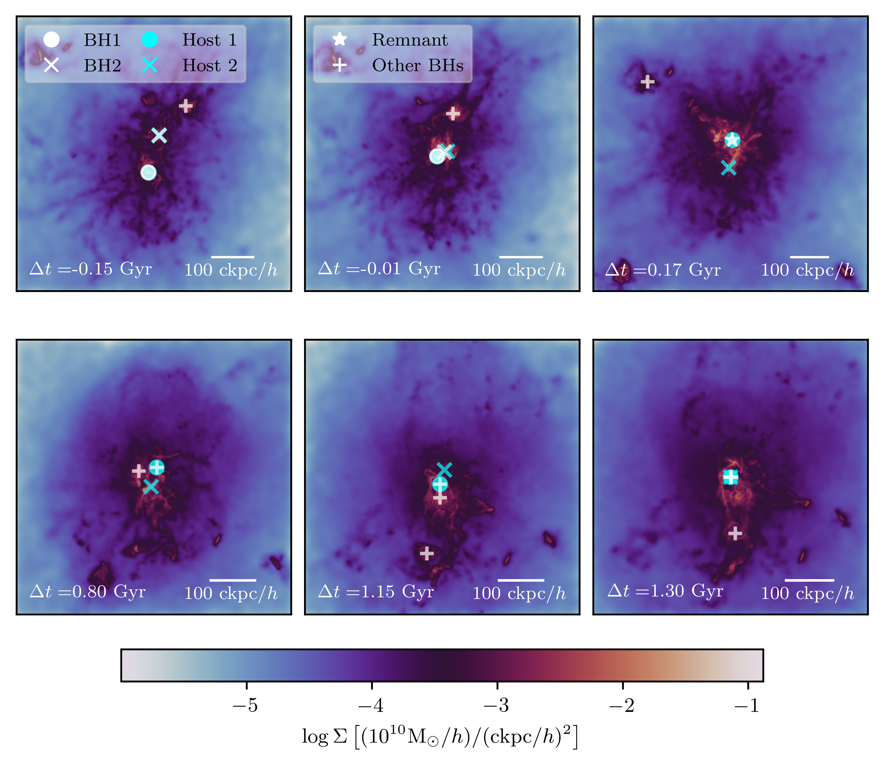

Publication
Premature supermassive black hole mergers in cosmological simulations of structure formation
Buttigieg, S., Sijacki, D., Moore, C. J., Bourne, M. A. (2025). Premature supermassive black hole mergers in cosmological simulations of structure formation. Monthly Notices of the Royal Astronomical Society, 2019, 2038.